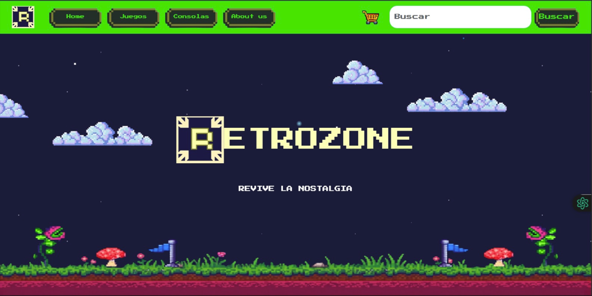
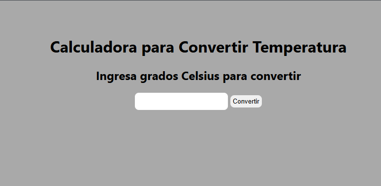

Junior Java Full-Stack Developer
HTML5 | CSS3 | JavaScript | Java | Spring Boot | SQL | Git | Scrum
HTML5 | CSS3 | JavaScript | Java | Spring Boot | SQL | Git | Scrum
I am a Java Full Stack Developer in training at Generation Mexico, focused on building scalable web applications using Java, Spring Boot, SQL, JavaScript, and React.
Through academic and personal projects, I have developed REST APIs, responsive user interfaces, and database-driven applications while applying Object-Oriented Programming principles, Git version control, and agile development practices.
I enjoy solving problems, learning new technologies, and collaborating with teams to create impactful software solutions. Currently, I am seeking my first professional opportunity as a Java Full Stack Developer where I can continue growing and contribute to real-world projects.
Looking for a Junior Web Developer or Java Full Stack Developer opportunity where I can contribute, learn and grow within a collaborative team.

Retro gaming e-commerce platform developed with Java, Spring Boot, MySQL, HTML, CSS, and JavaScript. Features product catalog management, responsive design, and database integration.

Temperature conversion web application built with HTML, CSS, and JavaScript. Implements form validation, DOM manipulation, and responsive user interface design.

Recipe management website developed as part of The Odin Project curriculum, focusing on semantic HTML, CSS styling, and responsive layouts.